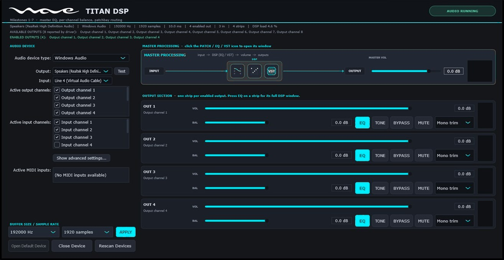
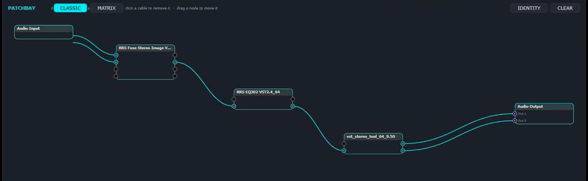
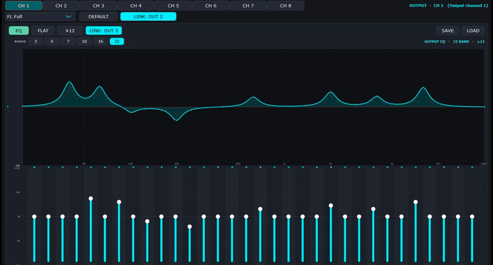
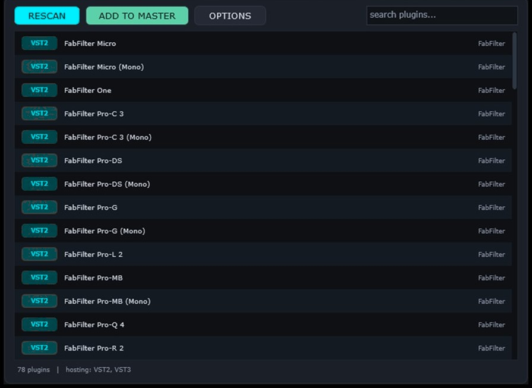

Wave / The work
Three disciplines. Three destinations.
Each part of Wave is developed around its own requirements, knowledge and process. Below is how each one works — and where to explore it in full.
Production, built on experience.
Wave Audio
Audio production is one of the long-standing foundations of Wave. It represents years of hands-on work, creative development, and technical practice. Explore the production work, services, projects, and process in their full context on Wave Audio.
Wave Audio covers music production, composition, mixing, mastering and sound engineering — creative work that depends on technical discipline. Each production is shaped by its brief and finished for the medium it will actually be heard in.
- Practice
- 18+ years
- Discipline
- Production & engineering
waveaudio.co.in
Methodology
- 01BriefIntent, references and delivery format agreed before work starts.
- 02ProductionComposition, arrangement and recording developed against the final medium.
- 03Mix & masterBalance, depth and loudness set for the destination, not the studio.
- 04DeliveryFiles finished and checked to the required specification.
Focus
- Music production & composition
- Commercial & broadcast audio
- Mixing & mastering
- Sound engineering
- Studio & audio system integration
Enquiries
Measured. Tuned. Refined.
Wave Car Studio
Wave Car Studio focuses on automotive audio measurement and DSP tuning, with RTA-based analysis and system calibration at the centre of the work. The objective is to understand the system, work with the measurements, and make informed tuning decisions. Explore the specialist work and technical approach in detail on the dedicated site.
A car cabin is one of the hardest listening rooms there is. Wave Car Studio measures it with a calibrated microphone, reads the response, and tunes the DSP from the data — then measures again to confirm the result. Audits are carried out at the customer's doorstep across Delhi NCR.
- Method
- RTA + DSP
- Coverage
- Delhi NCR
wavecarstudio.co.in
Methodology
- 01MeasureBaseline RTA capture of the existing system at the listening position.
- 02AnalyseResponse read against a target curve to locate peaks, dips and phase issues.
- 03TuneEQ, crossovers, delay and phase set in the DSP from the measurements.
- 04VerifyRe-measurement and listening to confirm the system behaves as intended.
Focus
- Calibrated RTA measurement
- DSP tuning
- Time alignment & phase coherence
- Target curve calibration
- Doorstep acoustic audits
Built to keep playing.
Wave Radio
Wave Radio is a self-built online radio station operating around the clock, delivering a continuous music feed through its existing streaming infrastructure. It is an active project, built and maintained as a working system. Listen to the station and explore the project on its dedicated website.
Wave Radio is as much a system as a station: continuous playout, a streaming chain built in-house, and the ongoing upkeep needed to keep electronic, house and trance programming on air without interruption.
- Uptime
- 24/7
- Lineage
- Since 1994
waveradio.eu.org
Methodology
- 01PlayoutProgramming scheduled to run continuously and unattended.
- 02StreamAn in-house streaming chain delivering the feed to listeners.
- 03MaintainMonitoring and upkeep so the station stays on air as a working system.
Focus
- 24/7 online streaming
- Automated playout
- Self-maintained infrastructure
- Electronic, house & trance programming
Enquiries
- Websitewaveradio.eu.org
Built one verified milestone at a time.
Wave Titan DSP
Multichannel car-audio DSP for Windows — independent processing per output channel, 32-band EQ, delay, a cable patchbay and VST2 / VST3 hosting. A lined-up project, actively being built.
Windows 10 / 11 · 64-bit & 32-bit builds · VST2 + VST3 hosting




Continue